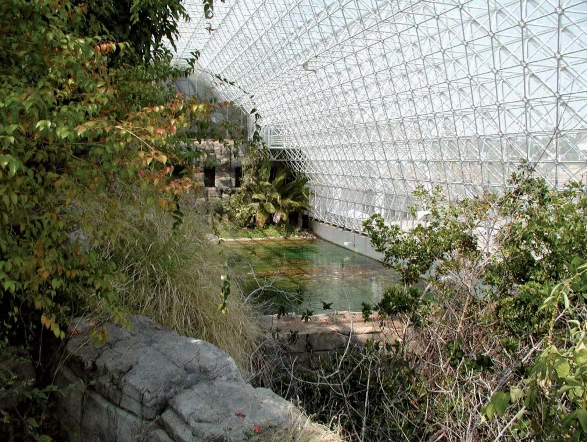
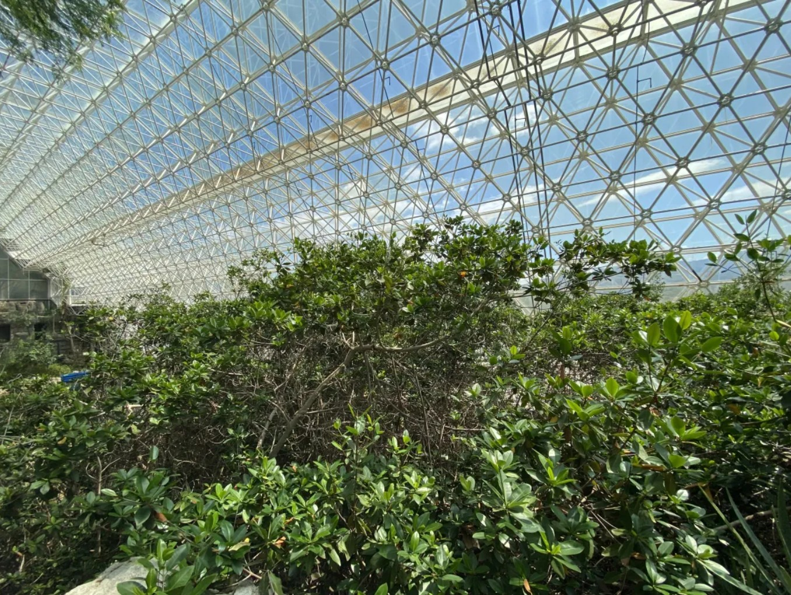
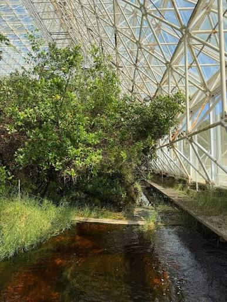
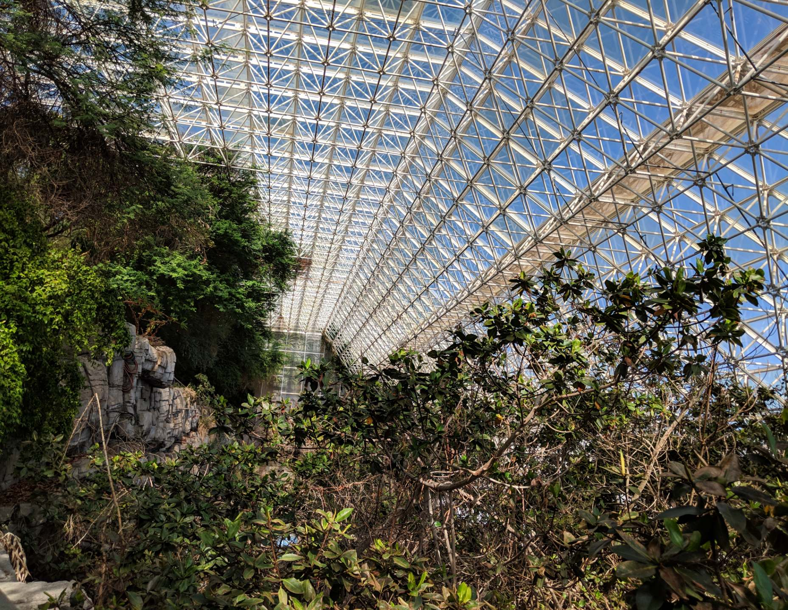

Mangrove Wetlands
Six interconnected estuarine sections modeling marsh and forested swamp communities — a living laboratory for wetland ecology, biogeochemistry, and coastal resilience.

A Living Estuary
The Mangrove mesocosm is comprised of two major wetland types: a small area of marshes dominated by grass species, and forested swamps dominated by mangrove trees covering 80% of the mesocosm. 542 mangroves and 15 freshwater trees were originally present in the mesocosm's 441 m² area.
This estuarine model is composed of six adjacent sections. Walls between each section are reinforced with steel rebar and have 0.6 m-wide notches that permit movement of animals and water between sections. To maximize species diversity, different community types were constructed in each of the six sections.
Six Sections, One Estuary
From freshwater pond to open bay, the mesocosm spans the full salinity gradient of a natural estuary — each section engineered with distinct substrate, hydrology, and community composition.
Freshwater Pond — 59 m²
Upland end ringed by Taxodium distichum, Annona glabra, Salix caroliniana, and Myrica cerifera.
Oligohaline Marsh — 32 m²
Transitional zone with Acrostichum danaeifolium, Spartina spartinae, and Laguncularia racemosa.
Salt Marsh / White Mangrove — 52 m²
Start of the marine area, dominated by Rhizophora mangle and Laguncularia racemosa.
Black Mangrove — 72 m²
Section dominated by Avicennia germinans — the black mangrove, characteristic of higher-salinity flats.
Oyster Bay — 91 m²
Northern open-water section dominated by Rhizophora mangle red mangroves and oyster communities.
Fringing Red Mangrove — 129 m²
Largest section — a fringing red mangrove community forming the marine edge of the mesocosm.
Wildlife of the Mesocosm
The marsh system was colonized with a diverse fauna: crawfish, snails, mosquito fish, sailfin mollies, mudcrabs, fairy shrimp, mangrove crabs, killifish, amphipods, sponges, anemones, and snapping shrimps.
There has been a decline in faunal diversity, perhaps caused by biotic closure effects and the absence of tides. This itself is a research subject — what happens to estuarine communities when tidal forcing is removed?
Inside the Mangrove Mesocosm


Wetland Research Opportunities
The mangrove mesocosm supports research into carbon sequestration, methane flux, salinity gradients, and wetland restoration strategies. Proposals welcome through the user facility program.